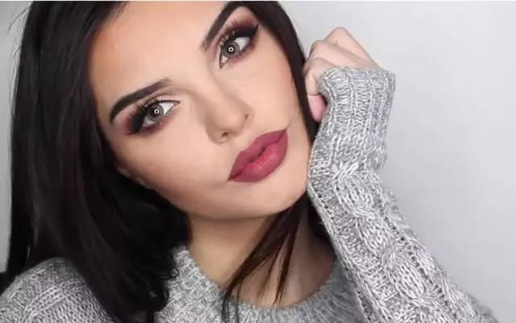
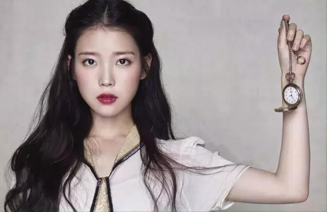
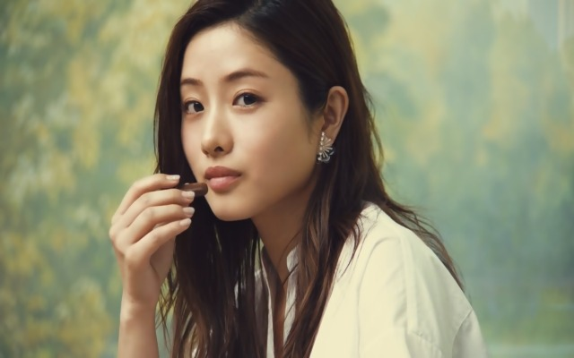
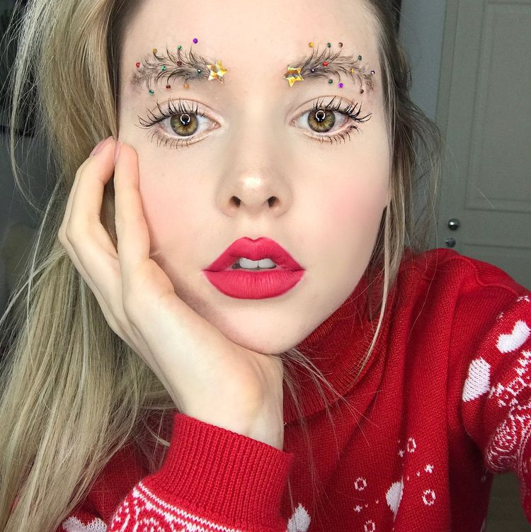

Now , choose a look that you like
(Tab a picture below ↓ )

Makeup of Europe & America
風格特色較鮮明，注重輪廓

Makeup of Korean
妝容以自然的裸妝為主，著重於唇妝、眼線,，較個性

Makeup of Japan
妝容甜美，偏柔和，著重於腮紅

Special Makeup
為了舞台或特殊活動所繪製的妝容